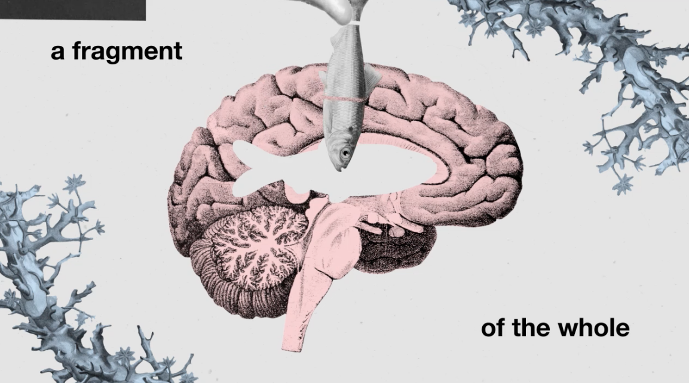
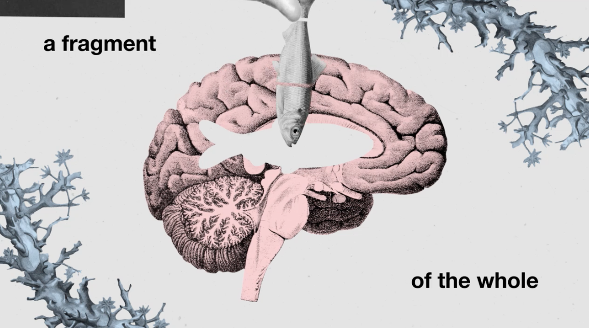
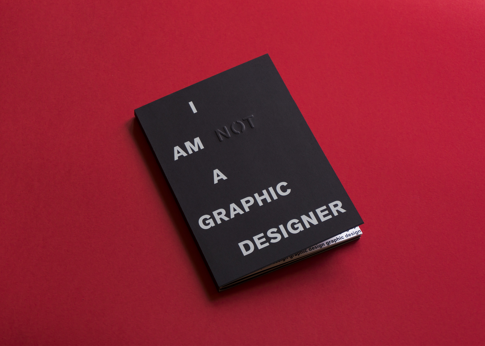
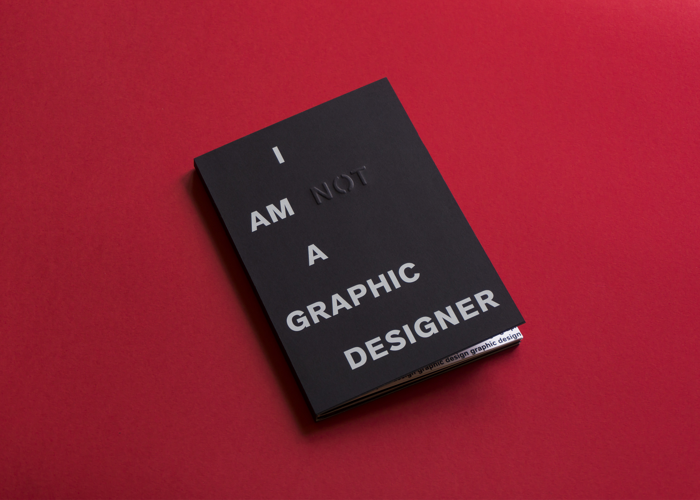
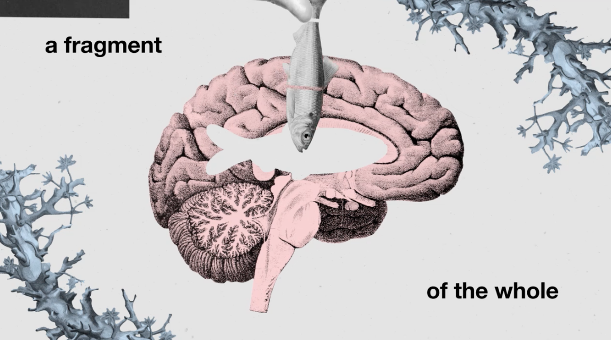
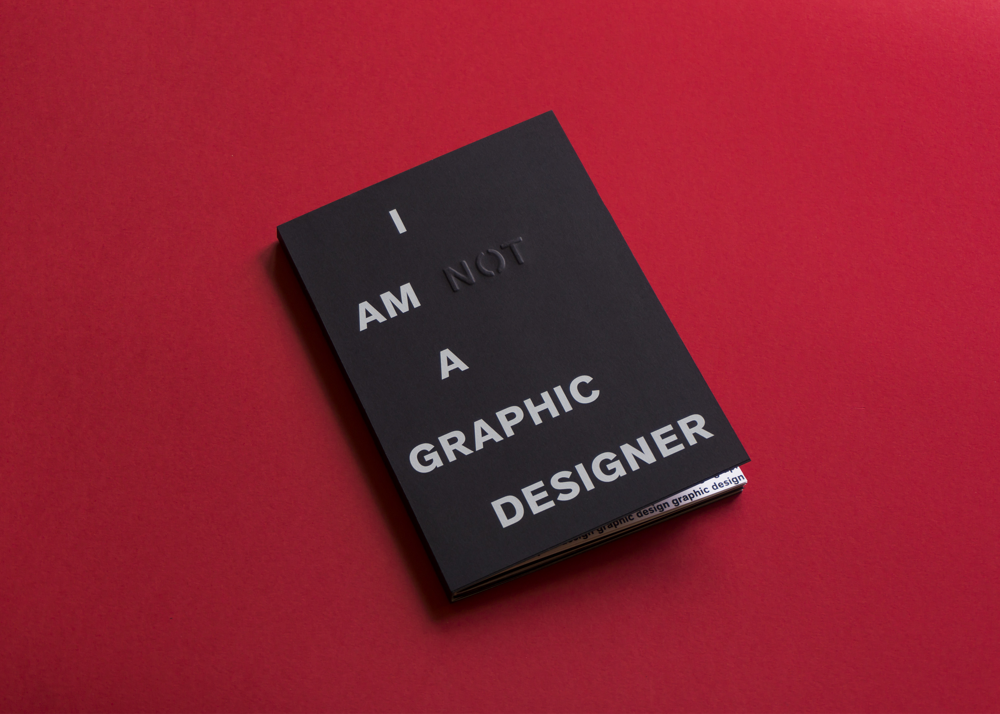

 

Zoe is a versatile, multi-disciplinary designer. She's always willing to try something new, and she loves design that has a sense of humour.
Get in touch:
zoehu@hotmail.co.nz
Currently based in:
Melbourne

